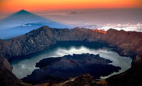
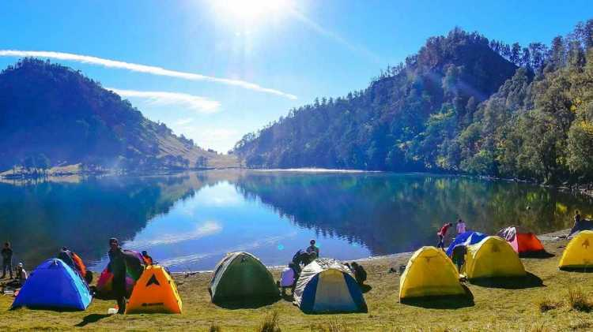
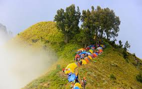
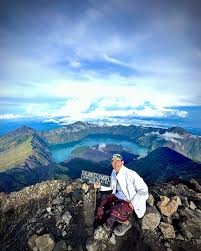

Book your travel today!
with Rinjani Excellence
Appreciation for completion
Pilih dari 10 paket trekking Mount Rinjani terbaik kami yang disesuaikan dengan preferensi dan pengalaman mendaki Anda.
Discover other breathtaking destinations around Mount Rinjani. From the rolling hills of Sembalun to the pristine beaches of the Gili Islands.

Pergasingan Hill & Strawberry Farms

Tiu Kelep Waterfall Tour

Snorkeling & Relaxing Beach Day
Panduan lengkap dan informasi berharga sebelum Anda memulai pendakian.
Based on 250+ reviews
"The 3 days 2 nights trek was hard but incredibly rewarding. The team from Rinjani Excellence carried all our gear, cooked amazing food, and kept us safe. Highly recommended!"
- Michael T., Australia"I appreciate their commitment to bringing all trash down. The tents were warm, the sleeping bags were thick. The sunrise at the summit was the best moment of my life. Thank you team!"
- Sarah V., Netherlands"Reaching the top was tough! But getting the printed certificate from Rinjani Excellence at the end made it feel so official. Great communication via WhatsApp before booking."
- David K., USA